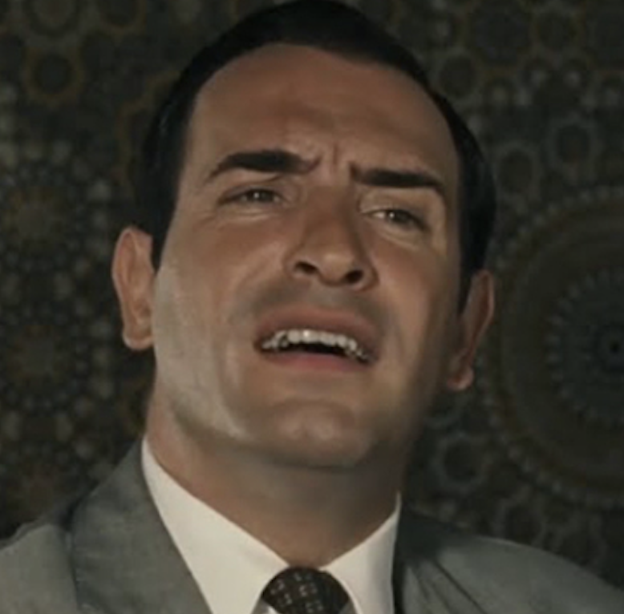
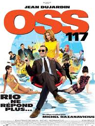

Biography
Jean Dujardin; born 19 June 1972 is a French actor, comedian, humorist and television director. He began his career as a stand-up comedian in Paris before guest starring in comedic television programmes and films. He first came to prominence with the cult TV series Un gars, une fille, in which he starred alongside his lover Alexandra Lamy, before gaining success in film with movies such as Brice de Nice, Michel Hazanavicius's OSS 117: Cairo, Nest of Spies and its sequel OSS 117: Lost in Rio, as well as 99 Francs. Dujardin garnered international fame and widespread acclaim with his performance of George Valentin in the 2011 award-winning silent movie The Artist. The role won him numerous awards, including the Academy Award for Best Actor (the first for a French actor), the Golden Globe Award for Best Actor – Motion Picture Musical or Comedy, the BAFTA Award for Best Actor in a Leading Role, the Screen Actors Guild Award for Outstanding Performance by a Male Actor in a Leading Role and the Cannes Film Festival Best Actor. He later appeared in Martin Scorsese's 2013 black comedy The Wolf of Wall Street.
OSS 117: Cairo, Nest of Spies

OSS 117: Cairo, Nest of Spies released in France as OSS 117 : Le Caire, nid d'espions, is a 2006 French spy comedy film directed and co-written by Michel Hazanavicius in his feature film debut. It stars Jean Dujardin, Bérénice Bejo, and Aure Atika. Set in 1955, the film follows the exploits of the French secret agent Hubert Bonisseur de La Bath / OSS 117, as he is sent to Cairo to investigate the disappearance of his best friend and fellow spy Jack Jefferson, only to stumble into a web of international intrigue. Cairo, Nest of Spies is based on the OSS 117 novel series by Jean Bruce, but acts as a parody of the spy genre rather than a faithful adaptation, and depicts OSS 117 as an idiotic Frenchman with narrow-minded views on race, religion, and gender roles. A sequel, OSS 117: Lost in Rio, also directed by Hazanavicius and starring Dujardin, was released in 2009.
OSS 117: Lost in Rio
OSS 117: Lost in Rio released in France as OSS 117: Rio ne répond plus (stylized as OSS 117: Rio ne répond plus...), is a 2009 French spy comedy film directed and co-written by Michel Hazanavicius. It is a sequel to Hazanavicius' OSS 117: Cairo, Nest of Spies, and see Jean Dujardin reprising his role as French secret agent Hubert Bonisseur de La Bath / OSS 117. Set in 1967, Lost in Rio sees OSS 117 sent to Brazil in order to retrieve a microfilm list of French Nazi sympathizers, only to once again unknowingly set foot into a bigger international intrigue. Like the first film, Lost in Rio is based on the OSS 117 character from the novels by Jean Bruce, but acts as a parody rather than a faithful adaptation. The original title literally translates to "OSS 117: Rio doesn't respond anymore", a reference to the 1932 film F.P.1 Doesn't Respond.
Rewards
- Oscar best actor 2012 for 'The Artist'
- Gold star of french cinema for his role in 'OSS117 : OSS 117: Cairo, Nest of Spies'
- 7's Gold for 'A boy, a girl'
- Film festival of Cabourg for 'A balcon on the sea'